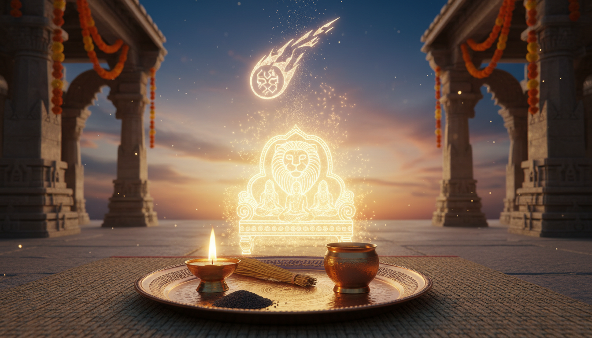

1. प्रस्तावना: कुरुक्षेत्र के मैदान में अर्जुन की दुविधा
कुरुक्षेत्र का युद्धक्षेत्र केवल दो सेनाओं के बीच का संघर्ष नहीं था, बल्कि यह धर्म, नैतिकता और भविष्य की पीढ़ियों के भाग्य का महासंग्राम था। युद्ध के शंखनाद के बीच, जब गांडीवधारी अर्जुन ने अपने ही परिजनों को सामने खड़ा देखा, तो उनकी चिंता केवल युद्ध की जीत या हार तक सीमित नहीं रही। अर्जुन एक अत्यंत गहरे मनोवैज्ञानिक और आध्यात्मिक संकट में घिर गए—"वंश के पतन" का संकट। उन्हें स्पष्ट दिखा कि युद्ध में कुल के नायकों और बुजुर्गों के वध से केवल वर्तमान ही नहीं नष्ट होगा, बल्कि आने वाली सदियों की परंपराएं भी धूमिल हो जाएंगी। एक युद्ध केवल योद्धाओं को ही नहीं मारता, वह उस नींव को हिला देता है जिस पर एक समाज और वंश का भविष्य टिका होता है।

2. भगवद गीता श्लोक 1.42: विश्लेषण और अनुवाद
अर्जुन अपनी व्यथा व्यक्त करते हुए कहते हैं कि कुल के विनाश से पितरों का भी पतन हो जाता है। भगवद गीता का श्लोक 1.42 इस प्रकार है:
सङ्करो नरकायैव कुलघ्नानां कुलस्य च । पतन्ति पितरो ह्येषां लुप्तपिण्डोदकक्रियाः ॥ ४२ ॥
(अनुवाद: वर्णसंकर (असंस्कृत संतान) की वृद्धि कुलघातियों और कुल, दोनों के लिए नरक के समान स्थिति उत्पन्न करती है। ऐसे कुल के पितर भी श्राद्ध और तर्पण की क्रियाओं से वंचित होकर पतित हो जाते हैं।)
इस श्लोक के गूढ़ अर्थ को समझना आज के संदर्भ में अत्यंत आवश्यक है:
- वर्णसंकर: इसका तात्पर्य केवल जैविक मिश्रण नहीं है, बल्कि ऐसी 'असंस्कृत' पीढ़ी से है जो उचित संस्कारों, नैतिक मूल्यों और कुल की शिक्षाओं से वंचित रह जाती है। जब मार्गदर्शन करने वाले बुजुर्ग युद्ध में मारे जाते हैं, तो संस्कारों का प्रवाह रुक जाता है।
- लुप्त-पिण्डोदक-क्रिया: वैदिक परंपरा में पितरों को 'पिण्ड' (चावल के गोले) और 'उदक' (जल का अर्पण) देने का विधान है। अर्जुन का तर्क है कि जब कुल की परंपराएं नष्ट होती हैं, तो यह तर्पण रुक जाता है। शास्त्र मानते हैं कि हमारे पूर्वज अपनी आध्यात्मिक तृप्ति के लिए वंशजों द्वारा दी गई इन आहुतियों पर निर्भर रहते हैं। इनका लुप्त होना पितरों के आध्यात्मिक कष्ट और वंश की उन्नति में अवरोध का कारण बनता है।
3. पितृ ऋण (Pitru Runa): एक अनकहा आध्यात्मिक कर्ज
सनातन परंपरा के अनुसार, हर मनुष्य जन्म लेते ही कुछ आध्यात्मिक ऋणों के साथ इस संसार में प्रवेश करता है। यह केवल एक धार्मिक अवधारणा नहीं, बल्कि ब्रह्मांडीय संतुलन के प्रति हमारी कृतज्ञता का प्रतीक है।
| ऋण का प्रकार | किसके प्रति ऋण |
|---|---|
| देव ऋण | देवी-देवता (प्रकृति और ब्रह्मांडीय शक्तियों के प्रति) |
| ऋषि ऋण | गुरु और ऋषि (ज्ञान और संस्कृति प्रदान करने के लिए) |
| पितृ ऋण | पूर्वज और माता-पिता (इस शरीर और वंश की निरंतरता के लिए) |
| मनुष्य ऋण | मानवता (समाज और सह-अस्तित्व के प्रति) |
पितृ ऋण को चुकाना केवल कर्मकांड नहीं, बल्कि एकcall to gratitude (कृतज्ञता का आह्वान) है। शास्त्रानुसार, धर्मसम्मत जीवन जीना और अपने कुल की गरिमा को बढ़ाना ही इस ऋण से मुक्ति का मार्ग है।
4. पितृ दोष: लक्षण और 'कर्मिक मैचिंग' का विज्ञान
जब पूर्वजों के कर्म अधूरे रह जाते हैं या उनके द्वारा किए गए आघातों को वंशजों द्वारा अनसुना कर दिया जाता है, तो वह ऊर्जा 'पितृ दोष' के रूप में प्रकट होती है। यह कोई अभिशाप नहीं, बल्कि एक 'कर्मिक ऋण' है। महत्वपूर्ण तथ्य यह है कि हमारा जन्म किसी विशिष्ट परिवार में 'कर्मिक मैचिंग' (Karmic Matching) के कारण होता है; हमारी आत्मा का कर्म उस कुल के कर्मिक पैटर्न से मेल खाता है।
इसके प्रमुख लक्षण इस प्रकार हैं:
- कैरियर और व्यावसायिक जीवन में निरंतर और अचानक आने वाली बाधाएं।
- विवाह में अत्यधिक विलंब या वैवाहिक जीवन में बिना किसी ठोस कारण के कलह।
- संतान प्राप्ति में समस्या या वंश का आगे न बढ़ पाना।
- स्वास्थ्य संबंधी समस्याएं, विशेषकर वे जो पीढ़ियों से परिवार में चली आ रही हों।
5. मघा नक्षत्र और केतु: वंशावली का सिंहासन
ज्योतिषीय विज्ञान में मघा नक्षत्र को 'वंशावली का सिंहासन' (Royal Throne) माना गया है। इसका प्रतीक 'राजसिंहासन' है और इसके अधिष्ठाता देव स्वयं पितृ हैं। यह नक्षत्र शासन, अधिकार और उस शक्ति का प्रतिनिधित्व करता है जो हमें हमारे पूर्वजों से विरासत में मिली है।
2026 का विशेष संदर्भ: 29 मार्च, 2026 को केतु का गोचर मघा नक्षत्र में होने जा रहा है। केतु मोक्ष और पुराने कर्मों का कारक है। जब केतु मघा जैसे पितृ-प्रधान नक्षत्र में प्रवेश करता है, तो यह 'वंशावली की ऊर्जा' (Lineage Energy) को जागृत करता है। यह समय उन पुराने कर्मों को शुद्ध करने के लिए अत्यंत महत्वपूर्ण है जो हमारी प्रगति को रोक रहे हैं। यह काल आत्म-समर्पण और जड़ों की ओर लौटने का है।
6. आधुनिक विज्ञान और मनोविज्ञान: एपिजेनेटिक्स (Epigenetics)
जो सत्य हमारे ऋषियों ने हज़ारों साल पहले 'संस्कार' और 'वंश' के रूप में बताया था, उसे आज आधुनिक विज्ञान 'एपिजेनेटिक्स' (Epigenetics) के माध्यम से प्रमाणित कर रहा है।
विज्ञान अब मानता है कि पूर्वजों के आघात (Trauma) डीएनए के माध्यम से अगली पीढ़ियों में स्थानांतरित होते हैं।
- नेमाटोड वर्म स्टडी (Nematode Study): शोध में पाया गया कि जब कीड़ों को तनावपूर्ण वातावरण में रखा गया, तो उनके वंशजों में भी तनाव के प्रति वैसी ही प्रतिक्रिया देखी गई, जबकि उन्होंने कभी उस तनाव का सामना नहीं किया था।
- ऐतिहासिक साक्ष्य: 'होलोकॉस्ट' (Holocaust) के जीवित बचे लोगों और 'डच अकाल' (Dutch Hunger Winter) के पीड़ितों के वंशजों में तनाव और चयापचय संबंधी विकार पाए गए।
इसे मनोविज्ञान में 'मॉर्फिक रेजोनेंस' (Morphic Resonance) कहा जाता है, जो हमारे शास्त्रों के 'सामूहिक कर्म' या 'वंशानुगत संस्कार' के विचार से पूरी तरह मेल खाता है।
7. वंश की शुद्धि के उपाय: आध्यात्मिक और व्यावहारिक समाधान
अपने कुल की ऊर्जा को शुद्ध करने और पितरों का आशीर्वाद प्राप्त करने के लिए निम्नलिखित विधियां शास्त्रसम्मत हैं:
- तर्पण और श्राद्ध: पितृ पक्ष के दौरान जल, काले तिल और चावल के पिण्डदान के माध्यम से पितरों को तृप्त करना। यह उनकी आत्मा की शांति और आपके जीवन से अवरोध हटाने की प्रभावी प्रक्रिया है।
- नारायण बलि पूजा: अस्वाभाविक या असामयिक मृत्यु के मामलों में कर्नाटक के गोकर्ण जैसे तीर्थों पर यह विशेष पूजा की जाती है। इसमें कुश (घास) का एक 'डमी शरीर' (Dummy Body) बनाया जाता है, जिसे अग्नि को समर्पित किया जाता है। यह प्रतीकात्मक क्रिया भटकी हुई आत्मा की मुक्ति और उसे 'यमलोक' तक पहुँचाने के लिए अनिवार्य मानी गई है।
- रुद्राक्ष धारण: मघा नक्षत्र और केतु की ऊर्जा को संतुलित करने के लिए 9 मुखी रुद्राक्ष (देवी दुर्गा/केतु) पहनना चाहिए जो कर्मिक ब्लॉकेज को हटाता है। इसके साथ ही 1 मुखी रुद्राक्ष (सूर्य/सिंह राशि) धारण करना चाहिए, जो मघा के 'राजसी सिंहासन' के अधिकार और आत्मविश्वास को पुनः स्थापित करता है।
- क्षमा प्रार्थना (Forgiveness Prayer): प्रतिदिन मन ही मन अपने पूर्वजों से उनके जाने-अनजाने अपराधों के लिए क्षमा माँगना और उनके प्रति कृतज्ञता व्यक्त करना कर्मिक मैचिंग के नकारात्मक लूप को तोड़ता है।
8. निष्कर्ष: जड़ों की ओर वापसी
अपनी जड़ों या पूर्वजों का सम्मान करना कोई पुरानी रस्म नहीं, बल्कि स्वयं के अस्तित्व को स्वीकार करने का विज्ञान है। मघा नक्षत्र हमें सिखाता है कि शक्ति केवल वर्तमान के प्रयास से नहीं आती, बल्कि इस पर भी निर्भर करती है कि उसे बनाने वाली जड़ें कितनी मज़बूत हैं। जब हम अपने पूर्वजों की ऊर्जा के प्रति सचेत होते हैं, तो हम केवल पितृ दोष का निवारण नहीं करते, बल्कि भविष्य की पीढ़ियों के लिए एक उज्ज्वल और संस्कारित पथ का निर्माण करते हैं।
Key Insights:
- जड़ों का सम्मान: आपका वर्तमान व्यक्तित्व और सफलता आपके पूर्वजों के बलिदानों और संचित पुण्यों का परिणाम है।
- कर्मिक दायित्व: पितृ दोष को सुधारना केवल व्यक्तिगत लाभ नहीं, बल्कि पूरे कुल की ऊर्जा को शुद्ध करने की सामूहिक जिम्मेदारी है।
- विज्ञान और संस्कृति का मेल: एपिजेनेटिक्स और भगवद गीता का ज्ञान एक ही सत्य की पुष्टि करते हैं—कि हम अपने पूर्वजों की स्मृतियों और अनुभवों का जीवंत विस्तार हैं।
Sources
- pitrudosha | Life Positive
- Magha Nakshatra – Authority, Ancestral Karma, and Leadership in Vedic Astrology
- How Pitru Dosh Affects Family Prosperity & Removal Remedies
- Narayan Bali Vidhi: A Sacred Ritual to Liberate the Departed Souls - Mahatarpan
- Pitru Rina and Pitra Dosha: Understanding the Consequences of Neglecting Ancestral Duty
- Pitru Dosha: Understanding the Ancestral Connection in Your Life - Chamunda Swami Ji | Spiritual Healing Center New york
- Pind Daan: Ritual, Significance, Vidhi, Benefits & Sacred Places - Rudraksha Ratna
- Manusmriti Verse 3.37
- Pitra Dosha: Causes and Remedies | PDF | Karma | Religion And Belief - Scribd
- Narayana Bali Puja (Offerings unto Lord Narayana) - Dipika – The Light in your Spiritual Life.
- Sapindi Shradh (Sapindikarana): The 12th Day Ceremony Guide - Prayag Pandits
- Magha Nakshatra: Power, Ancestry & Royal Influence—A&A - Vedic Astrology and Ayurveda
- Magha Nakshatra Ruling Planet Ketu – Meaning and Influence - ZODIAQ
- Ketu in Magha - Insights and Remedies
- Ketu ( South Node) Transit in Magha Nakshatra... A Karmic Recall of Lineage, Power, and Identity : r/LeoAstrology - Reddit
- Ketu (South Node) Entering Magha Nakshatra: Why Many People May Feel Their Ancestral Energy Awakening : r/AstrologyCharts - Reddit
- Ketu in Magha Nakshatra 2026: Effects Power Shifts & Karmic Reckoning for All Signs
- What Is Pitru Paksha? Meaning, Rituals, and Significance of Shradh(2025)
- Ancestors, Lineage - An Astrological Significance - Melooha
- 14 Types Of Pitru Dosha: Causes, Effects & Powerful Remedies
- Family Tree Healing (Ancestral Healing) - Inner Journeys
- Caught in Ancestral Patterns? Break free during Pitru Paksha - Namita Purohit
- Narayan nagbali - Wikipedia
- What is Narayana Bali Pooja? Rituals, Significance and Benefits
- Narayan Bali Puja in Gokarna
- Know the importance of Daan in Hinduism scripted in GARUD-PURAN - Prayag Pandits
- Daana Godaana Prashasti - TemplePurohit - Your Spiritual Destination | Bhakti, Shraddha Aur Ashirwad
- Shradh Shradh: A Deep Dive into the Hindu Ancestor Ritual
- Shraddha Rituals in Pitru Paksha | Honor Your Ancestors with Devotion - Radha Krishna Temple of Dallas
- Pitra Paksha: Healing Pitra Dosh & Ancestral Karma for a Harmonious Life - Aanchal Tarot
- 1.42 - Bhagavad Gita - Chapter 1, Verse 42
- BG 1.42: Chapter 1, Verse 42 - Bhagavad Gita, The Song of God – Swami Mukundananda
- Bhagavad Gita Verse 42-43, Chapter 1
- Bhagavad Gita 1.42 | The Bhagavad Gita with Commentaries of Ramanuja, Madhva, Shankara and Others
- 9. Bhagavad Gita Online Course - Chapter 1, Verse 40-47 (Dealing with Hurt & Distortions)
- Pind Daan In Gaya - Analyzing Its Importance In Hindu Way Of Life Through The Ancient Texts
- Significance of Garuda Purana | PDF - Scribd
- Garuda Purana - Wikipedia
- Garuda Puranam Explained: What Happens to the Soul After Death
- Sapindikarana rite: Significance and symbolism
- A Kariyam, a Tamil Death Ceremony | Living in the Embrace of Arunachala - WordPress.com
- Garuda Purana - Sapindikarana - Manblunder
- King Bhagiratha: Significance and symbolism
- King Bhagirath and the Descent of River Ganga - PrayFullit
- Bhagiratha's Determination: How Ganga Was Brought to Earth - Vedadhara
- Bhagiratha and the Ganges: A Multifaceted Exploration of Myth, History, and the Himalayan Ecosystem | by thomas varghese | Medium
- manu-smṛtiḥ - Chapter 3, Verse 281 | Sanskrit text in Devanagari and IAST transliteration
- Ketu Planet: Ketu Remedies & Puja Vidhi - AstroSage
- The Laws of Manu: Chapter 3, | Obelisk Art History
- Manusmriti Verse 2.12
- Garuda Purana: Significance and symbolism
- Unlocking the Sacred Significance of Pind Daan and Black Sesame in Pitra Paksha 2024
- Shradh Shradh: A Deep Dive into the Hindu Ancestor Ritual
- What is the story of the origin of Sraadha ritual? - Hinduism Stack Exchange
- Rites of Transition: Hindu Death Rituals - Beliefnet